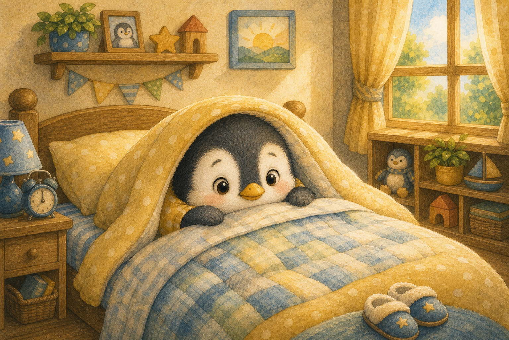
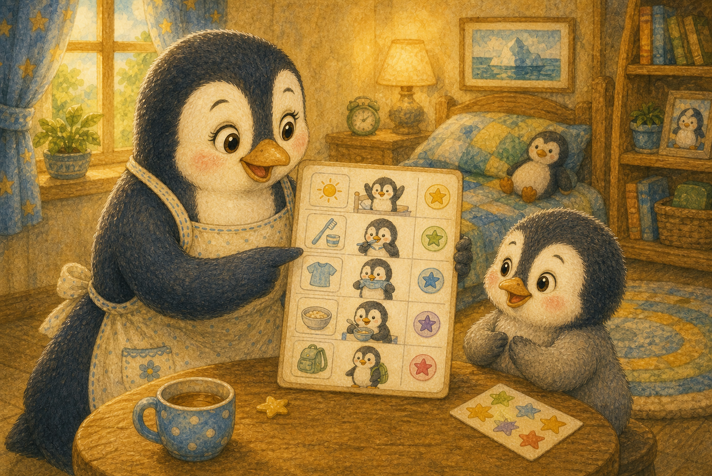
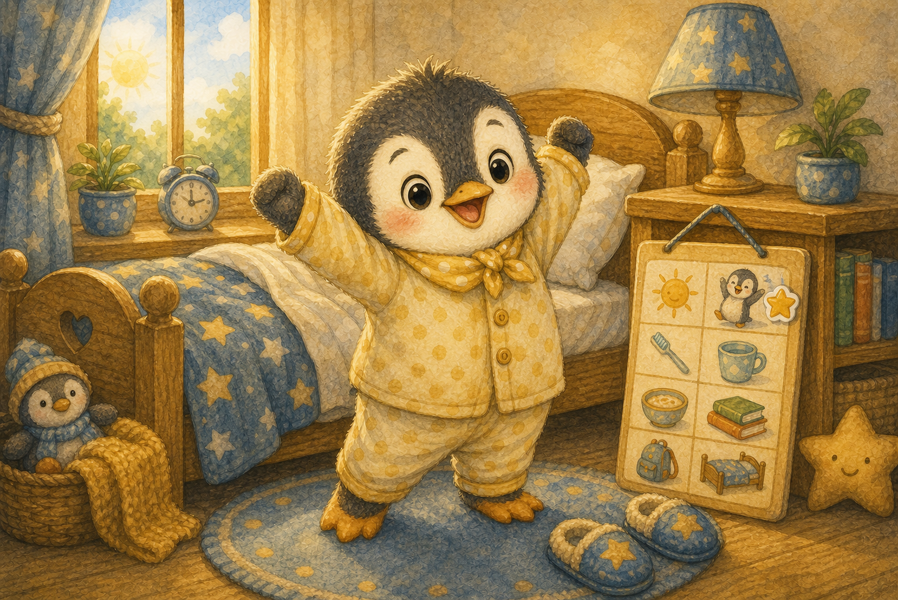
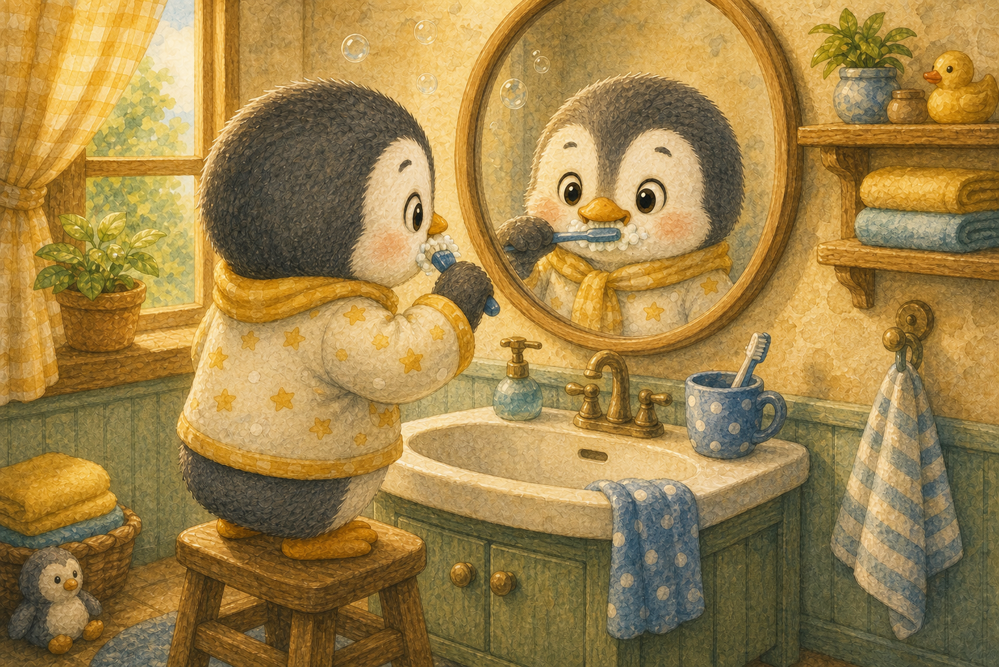
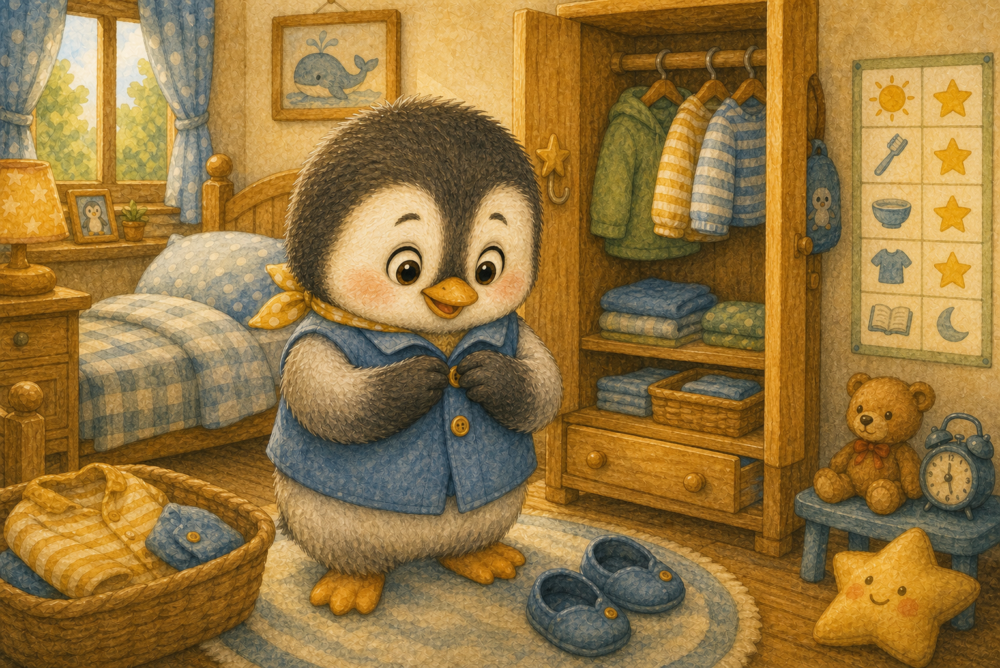
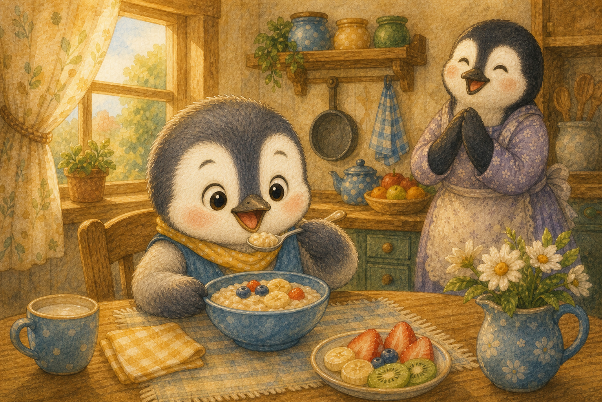
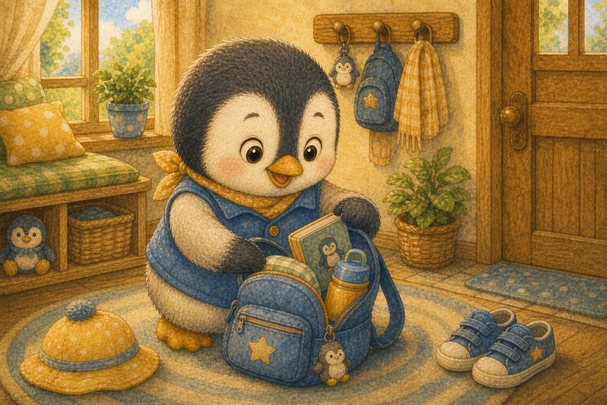
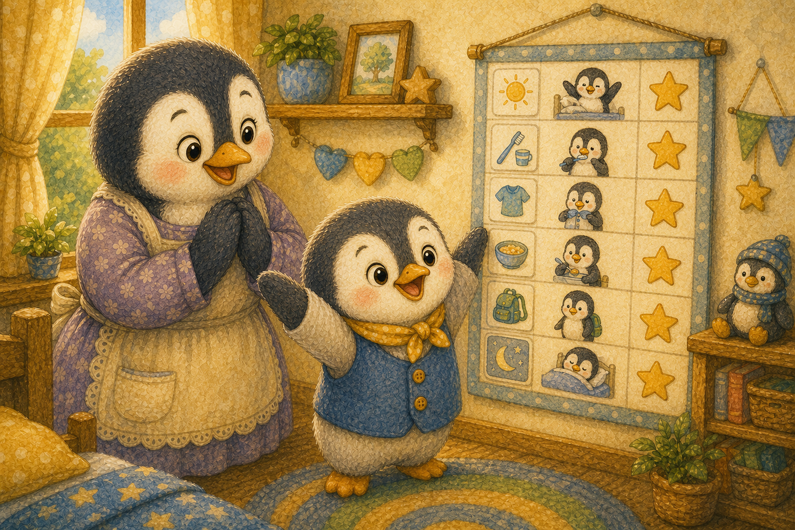
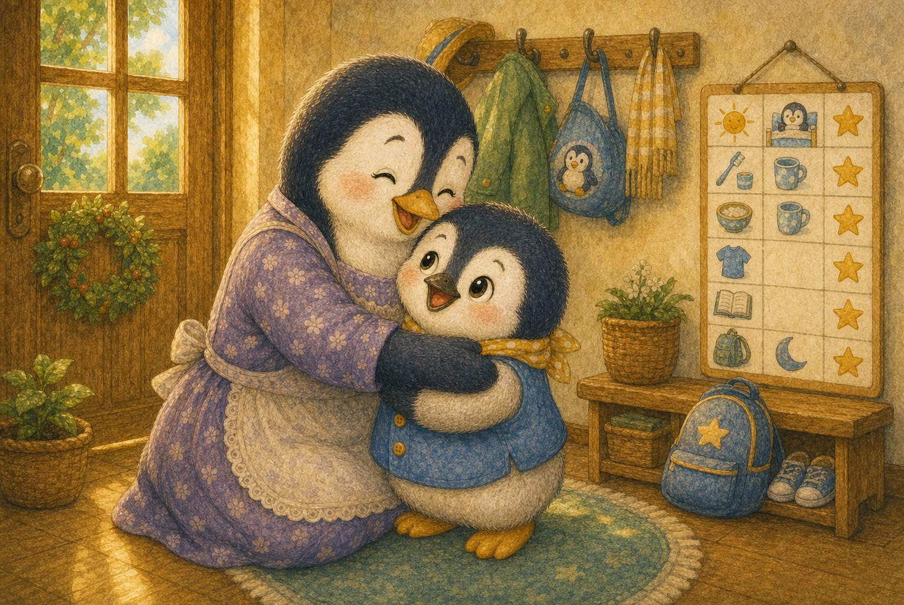
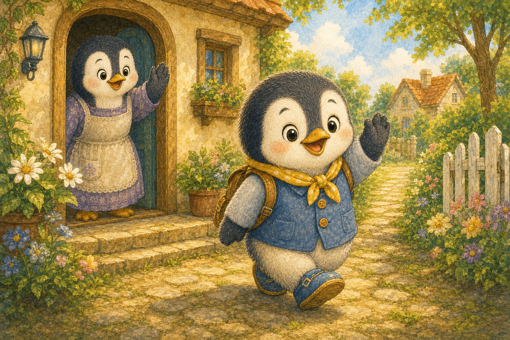

꾸물꾸물 아침
아기 펭귄 또또는 아침마다 이불 속에서 꾸물거렸어요. 일어나는 것도, 준비하는 것도 자꾸 미뤘지요.
"조금만 더 잘래…"

아기 펭귄 또또는 아침마다 이불 속에서 꾸물거렸어요. 일어나는 것도, 준비하는 것도 자꾸 미뤘지요.
"조금만 더 잘래…"

엄마 펭귄이 그림이 그려진 아침 약속표를 보여 주었어요. 하나씩 해내면 별 스티커를 붙일 수 있었지요.
"네가 직접 해 보면 어떨까?"

또또는 기지개를 쭉 켜고 스스로 일어났어요. 약속표에 첫 번째 별 스티커를 붙였지요.
"하나 해냈다! 반짝 별 하나!"

또또는 거울 앞에서 위아래로 치카치카 이를 닦았어요. 입안이 상쾌해지자 기분도 산뜻해졌답니다.
"두 번째 별도 내 거야!"

또또는 단추를 하나하나 채우며 옷을 입었어요. 처음엔 서툴렀지만 점점 손이 빨라졌지요.
"단추도 내가 척척 채웠어!"

또또는 식탁에 앉아 아침밥을 골고루 먹었어요. 배가 든든하니 힘이 불끈 솟았답니다.
"네 번째 별, 아침밥 끝!"

또또는 필요한 물건을 챙겨 가방에 쏙쏙 넣었어요. 빠뜨린 게 없는지 한 번 더 살폈지요.
"준비물도 내가 다 챙겼어!"

약속표에는 어느새 별 스티커가 가득 찼어요. 또또는 스스로 해낸 자기 모습이 무척 자랑스러웠답니다.
"내가 다 스스로 했어!"

엄마는 또또를 꼭 안으며 정말 멋지다고 칭찬했어요. 또또는 어깨가 으쓱해졌지요.
"스스로 하니까 시간도 많아졌네!"

이제 또또는 아침마다 스스로 척척 준비해요. 혼자 해내는 일이 이렇게 신나는 줄 몰랐답니다.
"오늘도 척척! 다녀오겠습니다!"